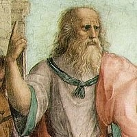

プラトン
プラトンは当初から政治と哲学の統合を模索しており、中期以降に示される「哲人王」思想や、後にアカデメイアの学園として実現される同志獲得・養成の構想を、この頃既に持っていたことが、『第七書簡』でも述べられている。そして、第一回シケリア旅行にて、シュラクサイのディオンという青年に出会い、彼に自分の思想・哲学を伝授したことをきっかけとして、後にシュラクサイという現実国家の改革（及び内紛）にも、実際に携わっていくことになる。 プラトンの著作の中で群を抜いて圧倒的に文量の多い二書、10巻を擁する中期の『国家』と、12巻を擁する後期末の『法律』、この二書はその題名からも分かるように、いずれも国家・国制・法律に関する書である。こうしたところからも、プラトンがいかにこの分野に強い志向・情熱を持っていたかが伺える。 この二書はいずれも、「議論上で、理想国家を一から構築していく試み」という体裁が採られている。 『国家』では、「哲人王」思想が披露される